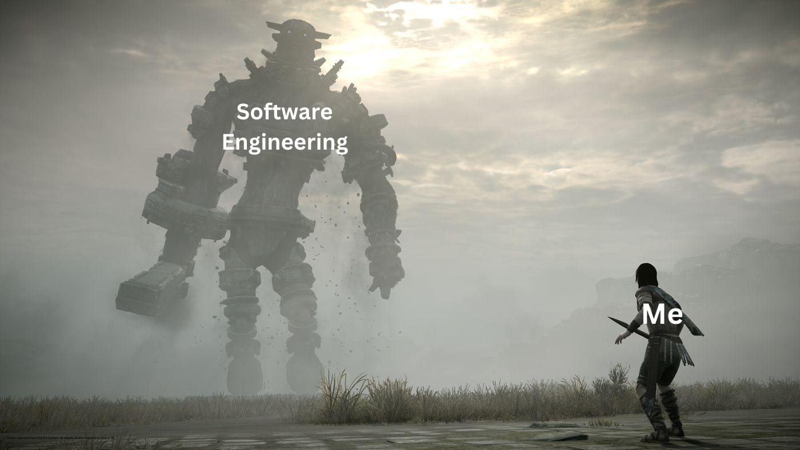

This semester I registered for ICS 314, which is a software engineering course. The war between me and the course was a legendary one, with ups and downs, but in the end, I came out victorious. Here’s an account of some of the notable battles.
One of the software engineering skills taught in ICS 314 was Agile project management. This skill requires one to break down a large project into smaller portions which allow the project developer to better tackle the project. I have always been the type of person who tries to get everything done in one sitting. When I have momentum I feel like I do my best work. However, for the project that our team decided to take on, this approach would be nearly impossible. The project was far too complex to be completed in one sitting. I had to learn to create milestones which contain certain issues that need to be addressed. Altogether, these milestones would result in a completed project. This approach was much more reasonable and helped keep my sanity. I anticipate this skill being extremely useful in my future endeavors. I do not think it is likely that my job will give me the type of work that can be done in one sitting. I will have to apply what I learned from this class to break the work into pieces that are reasonable to achieve in a certain amount of time.
In this course we also took time to analyze the ethics that could potentially be involved in software engineering. One example the instructor gave was working for a company that is developing facial recognition software. This theoretical company did not follow some ethical guidelines that were set by an organization. I was assigned the job of arguing that it is ethical to work for this company. Other students in the class were assigned the job of arguing against the company. This thought experiment made me realize there are two sides to every story, even if it doesn’t look like so on the surface. The instructor for this course also mentioned his work with a Department of Defense contractor. He explained that some of the work he did may not be ethical in everyone’s eyes. This made me question how far I’d be willing to go for work. I never really thought about how my work would negatively affect people’s lives because I am always just thinking of the positive outcomes. Although I don’t have a clear line that I can say I’m not willing to cross, this course has at least got me thinking about how my morals may come into play when searching for a job.
This class has taught me an innumerable amount of important skills and lessons. I could write so much more about what I learned, but these two battles resulted in the most significant skills and lessons I attained from this course. Overall, I came out of this course as probably twice the software engineer I was when I started.